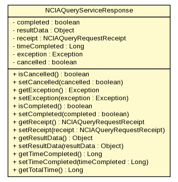

gov.nih.nci.ncia.grid.outgoing
Class NCIAQueryServiceResponse

java.lang.Object
 gov.nih.nci.ncia.grid.outgoing.NCIAQueryServiceResponse
gov.nih.nci.ncia.grid.outgoing.NCIAQueryServiceResponse
public class NCIAQueryServiceResponse
- extends java.lang.Object
| Methods inherited from class java.lang.Object |
clone, equals, finalize, getClass, hashCode, notify, notifyAll, toString, wait, wait, wait |
completed
private boolean completed
resultData
private java.lang.Object resultData
receipt
private NCIAQueryRequestReceipt receipt
timeCompleted
private java.lang.Long timeCompleted
exception
private java.lang.Exception exception
cancelled
private boolean cancelled
NCIAQueryServiceResponse
public NCIAQueryServiceResponse()
isCancelled
public boolean isCancelled()
- Returns:
- the cancelled
setCancelled
public void setCancelled(boolean cancelled)
- Parameters:
cancelled - the cancelled to set
getException
public java.lang.Exception getException()
- Returns:
- the exception
setException
public void setException(java.lang.Exception exception)
- Parameters:
exception - the exception to set
isCompleted
public boolean isCompleted()
- Returns:
- the completed
setCompleted
public void setCompleted(boolean completed)
- Parameters:
completed - the completed to set
getReceipt
public NCIAQueryRequestReceipt getReceipt()
- Returns:
- the receipt
setReceipt
public void setReceipt(NCIAQueryRequestReceipt receipt)
- Parameters:
receipt - the receipt to set
getResultData
public java.lang.Object getResultData()
- Returns:
- the resultData
setResultData
public void setResultData(java.lang.Object resultData)
- Parameters:
resultData - the resultData to set
getTimeCompleted
public java.lang.Long getTimeCompleted()
- Returns:
- the timeCompleted
setTimeCompleted
public void setTimeCompleted(java.lang.Long timeCompleted)
- Parameters:
timeCompleted - the timeCompleted to set
getTotalTime
public java.lang.Long getTotalTime()